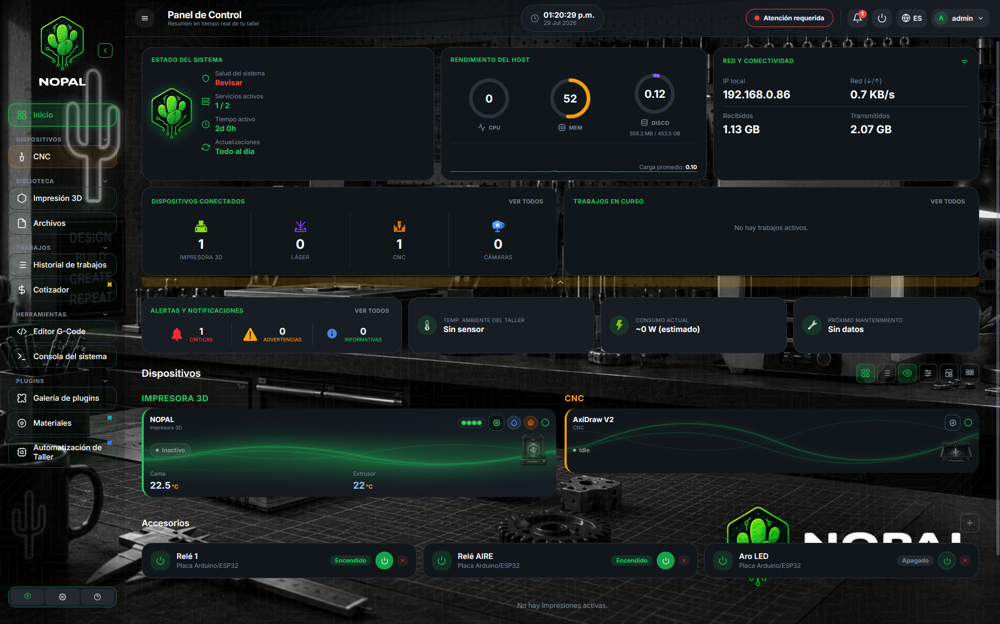
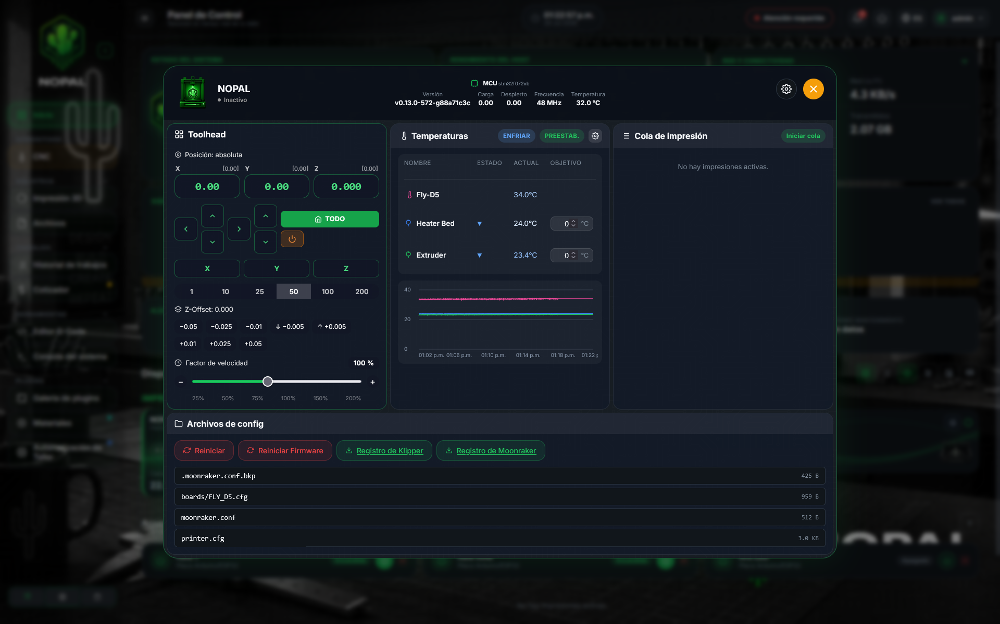
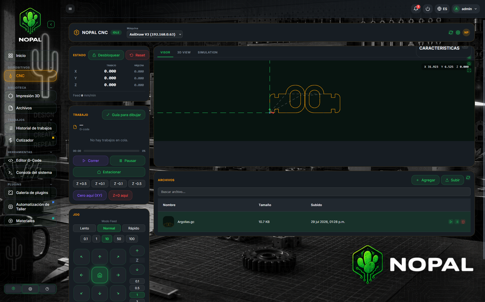
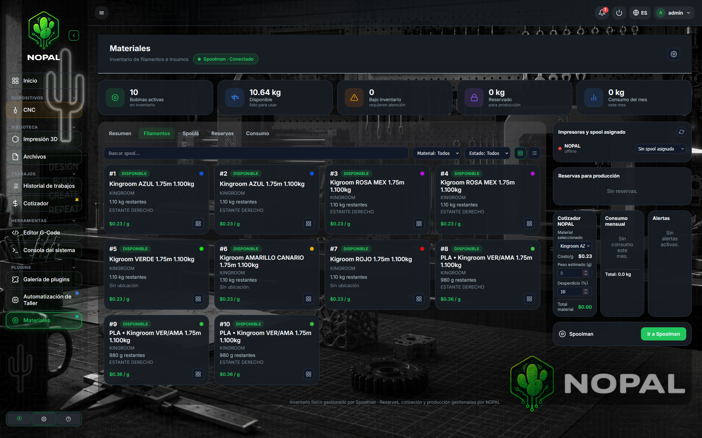
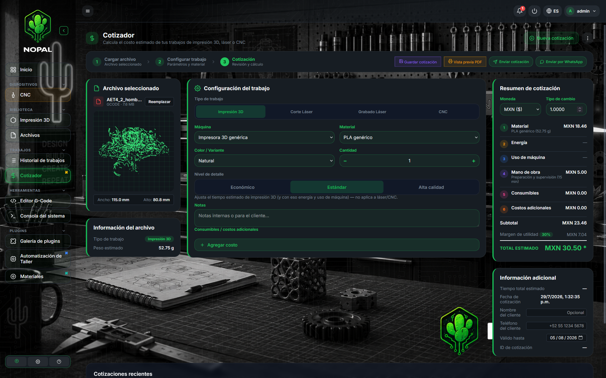
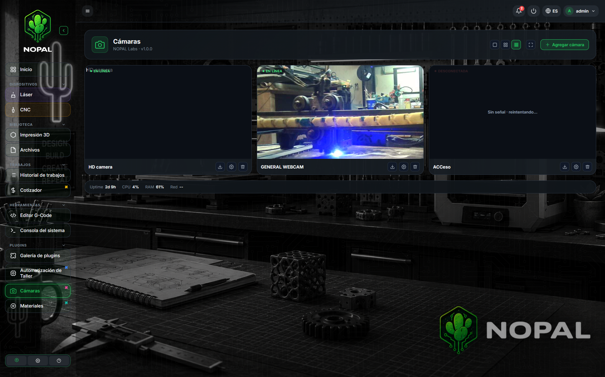
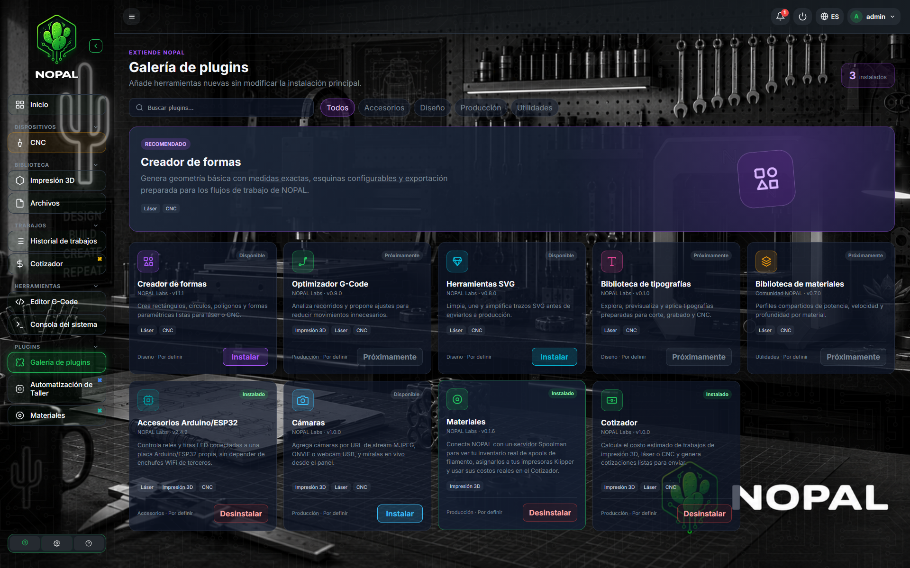
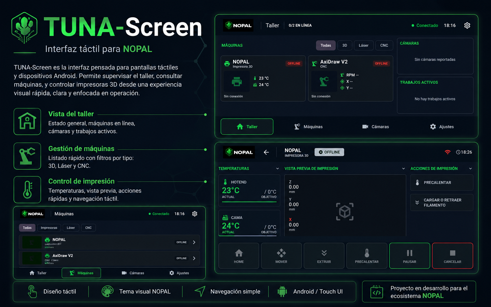
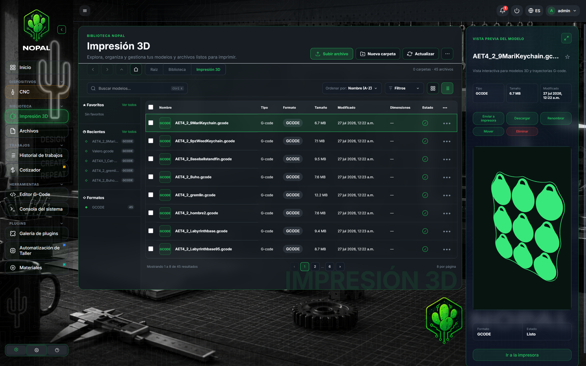
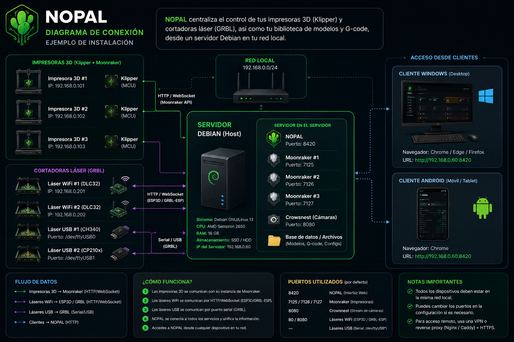

Node Operation, Printer And Laser — un dashboard autoalojado que unifica el control de impresoras 3D de 5 marcas, cortadoras láser y ruteadoras CNC GRBL, una galería de plugins y TUNA-Screen (su app Android complementaria), todo en un solo lugar.
Impresoras 3D de 5 marcas, láser/CNC GRBL, una galería de plugins y tu biblioteca de modelos, en una sola aplicación web servida desde un host en tu red local.
Todas las impresoras, láseres y CNC de la red en una vista, clasificados por color según tipo y estado, en tarjetas o lista compacta.
Klipper/Moonraker, Marlin standalone, Bambu Lab, Elegoo y FlashForge: temperaturas en vivo, movimiento del cabezal, cola de impresión con progreso y ETA. Cada marca con su propio driver, fiel a cómo habla ese hardware.
Placas por red (ESP3D/FluidNC) o USB/serial, varias a la vez. El mismo hardware se registra como láser (potencia/aire asistido) o CNC (spindle/refrigerante) según el rol, con jog, home, editor $$ y consola GRBL en vivo.
Explora, busca y previsualiza en 3D archivos STL/3MF/STEP y G-code. Envíalos a la cola, a la tarjeta SD o directo a una máquina.
Registro buscable, por máquina, de cada impresión o corte completado, cancelado o con error.
Suma Materiales (inventario real de filamento vía Spoolman), Cotizador (costo estimado de cada trabajo), Cámaras y Automatización de Taller (Arduino/ESP32) — sin modificar el núcleo de NOPAL.
Vincula un celular o tablet con un código de 6 dígitos y controla cualquier máquina — o montá una tablet directo en una impresora como pantalla de estado dedicada.
Lee y escribe cada parámetro $$ de la controladora, con descripción en lenguaje claro.
Light, Dark, NOPAL Style y Desert, más un editor completo de colores e imagen de fondo del dashboard. Interfaz bilingüe (ES/EN).
Capturas reales de una instancia de NOPAL corriendo en red local. Haz clic en cualquiera para ampliarla.










El servidor de NOPAL (Python/FastAPI) corre en un host Debian/Raspberry Pi OS/Ubuntu, junto con una instancia de Moonraker por impresora Klipper. Las demás marcas hablan cada una su propio protocolo directo con el equipo (MQTT para Bambu Lab, WebSocket/SDCP para Elegoo, HTTP para FlashForge), y los láseres/CNC GRBL se conectan por WiFi (ESP3D/FluidNC) o por USB/serial. Los plugins son repositorios aparte, clonados y cargados en caliente; TUNA-Screen habla con NOPAL por su propia API REST + WebSocket, nunca directo con el hardware.
| Puerto | Servicio |
|---|---|
8420 | Interfaz web de NOPAL (configurable con NOPAL_PORT) |
7125–7127… | Una instancia de Moonraker por impresora Klipper |
| MQTT / WebSocket / HTTP | Bambu Lab, Elegoo y FlashForge — directo al equipo, sin puerto adicional en el host |
8080 | Crowsnest (streaming de cámaras), si está habilitado |
| Serial | Placas láser/CNC GRBL por USB (/dev/ttyUSB*) |
Requisitos: Python 3.9+, un usuario Linux no-root con acceso a sudo, y acceso de red a tus impresoras/láseres.
Descarga el código en tu host Linux.
install.sh crea el entorno virtual, instala dependencias y genera el servicio systemd.
El instalador imprime la URL local, por defecto en el puerto 8420.
Guías completas, en español, para sacarle provecho a cada sección del dashboard.
PDF completo con las 9 secciones del dashboard: Panel de Control, Modelos 3D, Láser, Impresora 3D, Consola, Historial y Configuración.
Descargar PDFResumen técnico del proyecto, arquitectura, stack e instalación, directo en el repositorio.
Ver README.es.mdSame project overview, architecture, stack and install steps, in English.
View README.mdApp Android complementaria (Kotlin + Compose) para controlar NOPAL desde un celular o una tablet montada en una máquina.
Ver repositorio